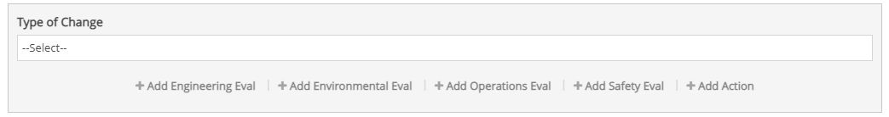
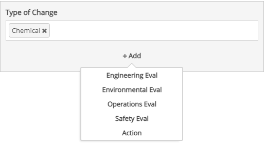
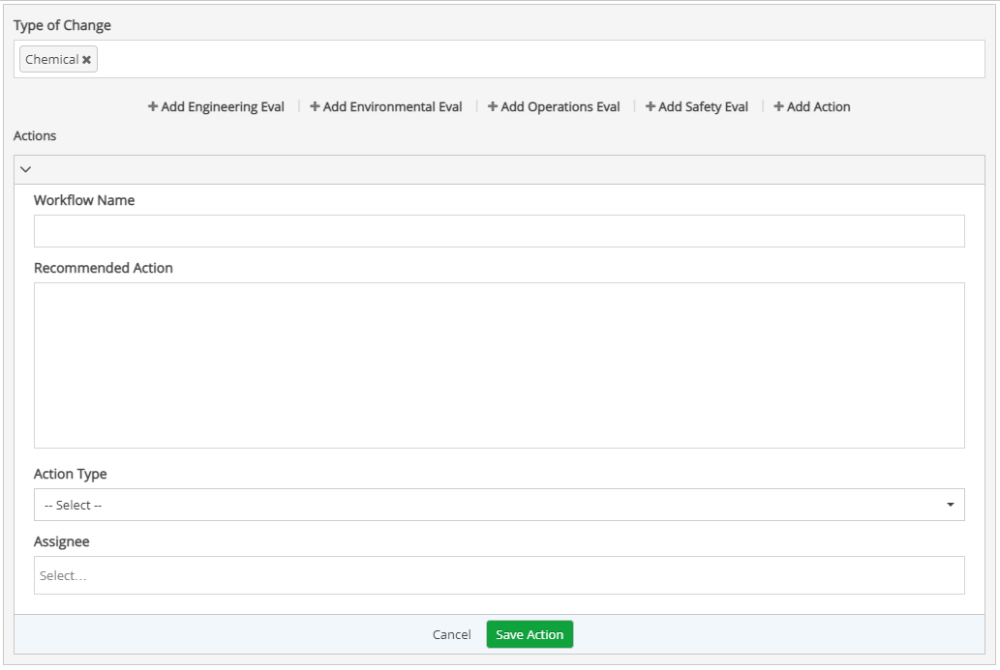
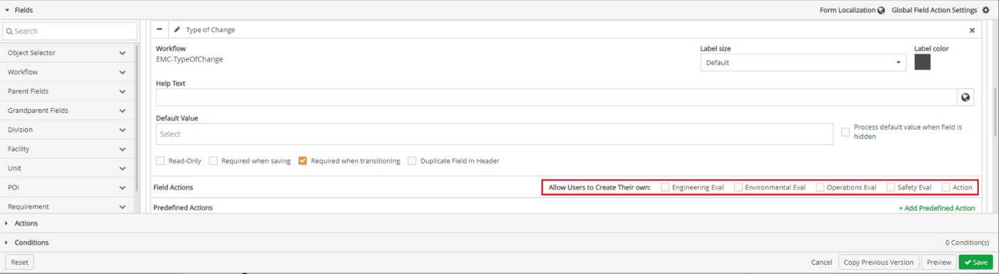

Enabling user defined form fields without predefined actions, allows users to create inline actions for users to follow to based on response selected for questions in a form.
Click + Add (field action name).

If there are multiple field actions that cannot fit on a line in the screen the app is being viewed on +Add displays instead.
Click + Add. A list of field actions appears.
Click a field action.

Once a Field Action form displays, fill in all fields.

Click Save. The field actions is added to the specific question and response.
When online, an inline progress bar will be shown under the question as the item is created.
More than one field action can be added to any given question on a form, and each question can also have multiple responses with varying resultant field actions.
Add a Form Field Without Predefined Actions:
Once Field Actions have been added, click the Fields ribbon.
Under the Field Sections, click the + icon in front of the field on the form the field action is to be added to.
The workflow form type section expands.

To the right of Field Actions, select all the fields to the right of the Allow User to Create Their Own. Field Actions without predefined actions will be added to the Form.